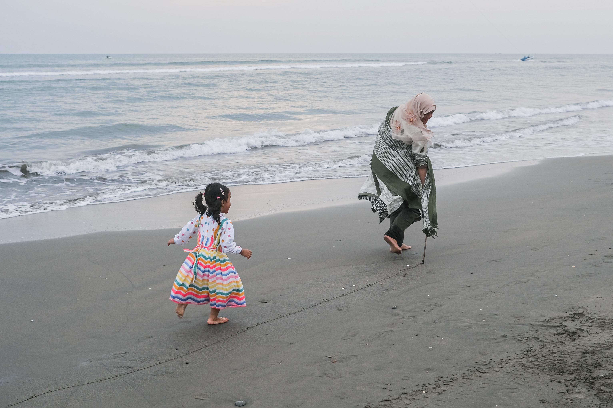
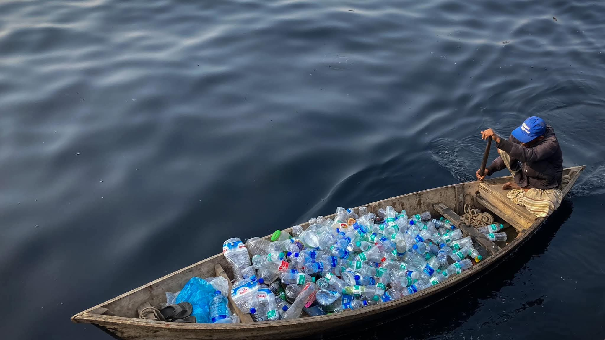
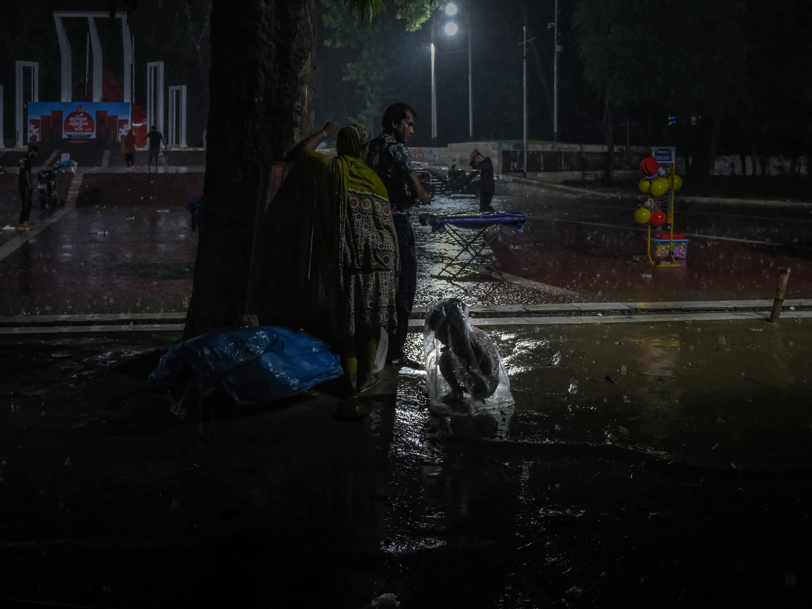
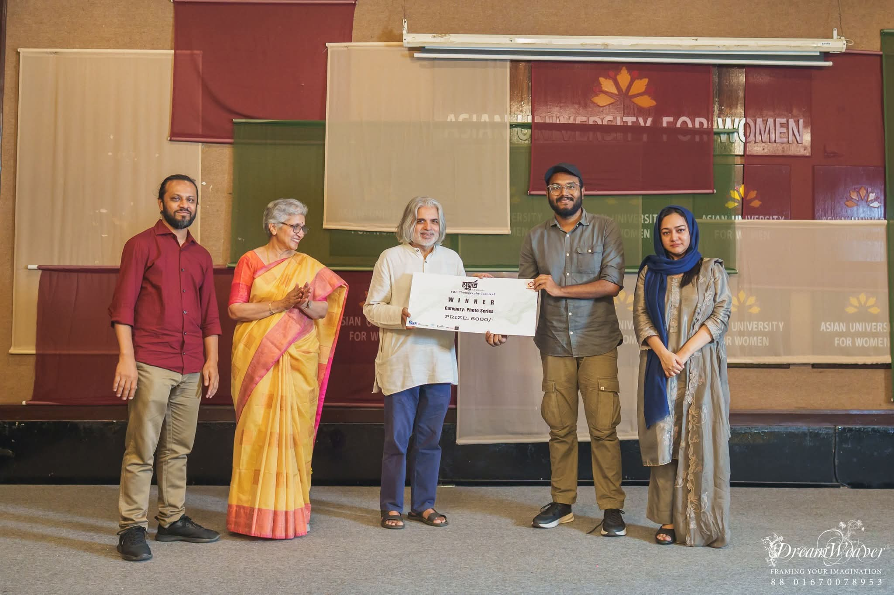
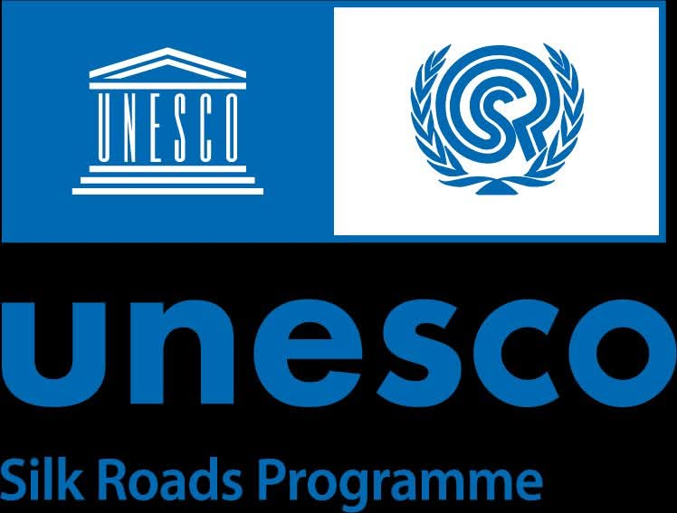

The Cost of Coexistence
2023 – Ongoing
Documenting communities living alongside wild elephants in Bangladesh's forests and farmlands.
More information →Documentary Photographer
I am Mahbubul Alam, a documentary photographer based in Dhaka, Bangladesh. I have received two national photography competition awards and have exhibited my work in several major photography contests in Bangladesh. My work was also shortlisted for UNESCO's "Youth Eyes on the Silk Roads" contest and has been published in the popular Bangladeshi daily newspaper Dhaka Tribune. I am currently working on journalistic documentary projects based on human–wildlife conflict, exploring the deep connection between humans, nature, and the environment.

Dhaka Tribune — Spotlight
May 18, 2024

Organised by East West University Photography Club

Photography exhibition, Dhaka

United Nations in Bangladesh

Asian University for Women Photography Club
Category: Photo Series

Travelettes of Bangladesh (ভ্রমণকন্যা)

Category: 18–25 Years Old